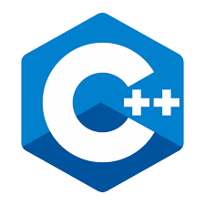
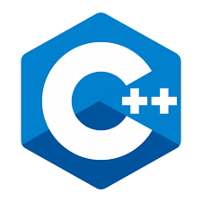

Desenvolvimento de software

 

Um desenvolvedor de software é um profissional altamente capacitado versátil que projeta constrói e mantém programas de
computador. Eles desempenham um papel fundamental no desenvolvimento de software, trabalhando em estreita colaboração com
equipes de projeto e usuários finais para transformar requisitos e ideias em código funcional.
Um desenvolvedor de software geralmente é especializado em uma ou mais linguagens de programação, como Java, Python,
C++, JavaScript, Ruby, entre outras. Eles conhecem as melhores práticas de programação e estão familiarizados com o uso
de bibliotecas, frameworks e ferramentas de desenvolvimento relevantes. Além disso, eles precisam ter habilidades de
resolução de problemas e capacidade de trabalhar em equipe.
Os desenvolvedores de software podem se concentrar em diferentes áreas, como desenvolvimento web, aplicativos móveis,
sistemas embarcados ou software de desktop. Eles também podem se especializar em diferentes etapas do ciclo de vida de
desenvolvimento de software, como análise de requisitos, design de software, implementação, testes ou manutenção.